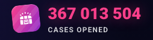
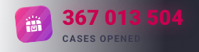
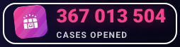
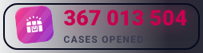
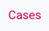
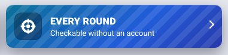
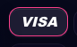

Footer
The foot of every page as one block set off the rail: the four counters on a dark band, the brand with Need help and the social squares, three columns of links, the two trust plates, Play responsibly and Every round, with the payment cards, then the age and market lines, the language and the fine print. It carries Provably fair and Responsible play, each in its own column (CLAUDE.md, "Information architecture"). Everything on this page is drawn by design/system/components/footer.css through index.css, the same file a screen will load.
Anatomy
It holds five atoms and places them, and redraws none: the Figure (level 1) as .fig--stat, each counter's figure and caption, sized by the footer through --fig-stat-v, --fig-stat-c and --fig-stat-gap; the Logo (level 1) as .logo--l; the Button (level 1), Support as .button--primary.button--m and the seven social squares as .button--icon; the Icon (level 1), each counter's mark and the round plate's target, in its story form; the Popover menu (level 1) as .popover--lang, the language. Everything else is the footer's own: the band and its tiles, the columns and their links, the strip, the two plates, the payment cards and the foot.
| Part | Class or element | What to change there |
|---|---|---|
| The foot | .footer | the container whose own width decides the layout (container: footer), its own geometry (--footer-*), the base ink |
| Block | .footer__block | the panel set off the rail, the 24px corner, its lift and the soft blue light rising off its top |
| Counters | .footer__band, __stats, __stat, __tile, __live, .fig--stat | the dark band between a blue and a pink line; each counter a tile in a mode's colours and a Figure; the green dot of Online now. Cases opened is a link, the other three take focus |
| Brand | .footer__brand, __ident, __help, __social, .logo--l | the logo, the operator's line, Need help with Support, the social squares seven in a row (four under 342px of the column) |
| Columns | .footer__cols, __col, __col-h, __gap, __link, __link--button | Play over Platform, Cases, Company; the footer's own link, white, pink under the pointer; Cookie settings is a button that reads as a link |
| Operators | .footer__agents | the two operators at the right, their heads over the band's line; under 560px beside Company, their feet on the strip |
| Strip | .footer__strip, __plates, __plate--age, __plate--fair, __age, __pt, __ptx, __go | the two trust plates on a dark plate: Play responsibly with the 18+ disc, Every round with the target; each with its arrow |
| Payment cards | .footer__pay | six provider marks in one muted tone, three to a row beside the plates, six under 1000px |
| Foot | .footer__end, __row, __legal, __lang, __fine | the age and market lines and the language on one row over a pink line, the fine print under them |
The inventory lists a Disclosure and a Text link among what the Footer holds. No coloured screen draws either: the footer's links are its own form, .footer__link, and no part folds. Built as drawn; the row is a question for the founder.
Variants and sizes
One form. Its layout is chosen by its own width, not by the window's: the footer is a container. Widths and heights below are read from the rendered footers.
- Width = the footer's own. Wider than 1000px: the counters four in a row, the brand beside three columns, the plates beside the payment cards three to a row. 1000px and under: the counters two by two, the brand over the columns, the cards six in a row under the plates. 560px and under: each counter's figure under its tile, two columns of links, the plates one over the other, the cards three to a row, the foot centred.
- The window under 900px takes the block's corner and lift away and runs it edge to edge: the rail is gone, so nothing sets it off.
- A touch screen (
pointer: coarse) makes each link a 40px row and the cards 40px tall once they leave the plates' side.
The same footer in a 760px column:
And in a 400px column:
When to use
At the foot of every page, once, after the screen's own blocks. It says what this place is and who runs it, how much has happened here (the counters), where help is, what the rules are and who may play. It carries the two trust destinations the rail does not: Provably fair, the brand's promise that its numbers are checkable (design principle 1), and Responsible play, the limits (a compliance constraint of CLAUDE.md). Its words are the screens' and the voice's: "Play responsibly", "For people 18 or over", "Every round", "Checkable without an account". The counters are samples (D-124).
Rule and anti-rule
Use it
Under the screen's slot on every page, Home to Sign in, one per page. The ways to play live in the Rail; the money and the account live in the Header; the footer holds the destinations of trust and the law.
Take another component
A destination someone needs now is a Rail row or, on a phone, the Bottom bar. A trust claim at the moment of spending is a Money strip or a Status notice beside the act, never only in the footer (principle 3). A single link in running text is a Text link.
States
The footer in Anatomy is live, on this page's theme: point at a counter, a link, a plate or a payment card, or reach them with Tab. The page loads motion.js, as the Icon's page does, only so the counters' and the round plate's marks are dressed in their story form and play under the pointer; nothing else of the product's script runs here, so the language stays closed (its open state is on the Popover menu's page).
Snapshots, dark on the left and light on the right, taken with reduced motion, so each shows the face the state settles on: a story does not play and the 18+ disc does not spin. The base set is shot once on the first counter; after it, only a named difference.


translate, rotate; no colour moves

--line-focus

--text-link

filter: brightness(1.08), translate

--footer-pay-bg-hover, --line-lit, --text-hi, --shadow-footer-pay- The same answer, said once: a link, a plate, a payment card and Cookie settings take the same ring as a counter,
--line-focus, at 2px from their edge (a counter's sits 4px off on a 12px corner). A payment card on focus also turns its mark white, as under the pointer. - No press look: kit.css draws none on any part, so none is shot. Cookie settings has no hover of its own: it stays white and underlined.
- Held components keep their own states: Support and the social squares are the Button's, the language is the Popover menu's, the marks' stories are the Icon's. The footer writes none of them.
- No disabled look and nothing the product's script sets on the footer itself.
node design/kit/tools/shoot-states.js http://localhost:8765/ footer # re-shoot after a change to footer.css or its tokens node design/kit/tools/shoot-states.js http://localhost:8765/ footer --check # step 9: fails if a snapshot drifted
In the code
| Token | Kind | Dark | Light |
|---|
Read live from tokens.css. One component token, --footer-pay-bg-hover: a payment card's wash under the pointer, white at .08, which no role holds. Twelve colours read in this block only stay primitives until step 9 (tokens-audit.md), among them the band's light and fade, the plates' lift, the fair blue, the 18+ red and the cards' muted tone. The block's own geometry is its --footer-* custom properties, each with its origin in v4.
File: design/system/components/footer.css, loaded by design/system/index.css in the organisms' group.
<footer class="footer"><div class="footer__block"> <div class="footer__band"><div class="footer__stats"><a class="footer__stat" href="..."><span class="footer__tile" aria-hidden="true"><span class="icon icon--box"></span></span><span class="fig fig--stat">...</span></a>...</div></div> <div class="footer__mid"><div class="footer__brand">...</div><div class="footer__cols"><nav class="footer__col" aria-label="..."><p class="footer__col-h">Platform</p><a class="footer__link" href="...">Provably fair</a>...</nav>...</div><span class="footer__agents" aria-hidden="true"></span></div> <div class="footer__strip"><div class="footer__plates"><a class="footer__plate footer__plate--age" href="...">...</a><a class="footer__plate footer__plate--fair" href="...">...</a></div><ul class="footer__pay" aria-label="Payment methods">...</ul></div> <div class="footer__end"><div class="footer__row"><div class="footer__legal">...</div><div class="footer__lang"><div class="popover popover--lang">...</div></div></div><div class="footer__fine">...</div></div> </div></footer>
Stands on: Home, the case screen, the catalogue, Deposit, My items, Provably fair, Responsible play, Sign in. Until step 8 those screens still read kit.css. Where a page places it (.shell > .footer, the gap above it and its grid area) is the shell's rule and stays in kit.css until step 6.